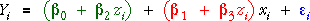

Interaction
The effects of two explanatory variables are not always additive. For example, increasing the amount of nitrogen fertiliser (X) may improve the yield of wheat (Y), but only at high temperatures (Z).
In the illustrative diagram above, we have only shown data at two values of Z to show clearly that the increase in yield per unit increase in fertiliser (i.e. the slope for X) is greater at high temperatures (high Z) than at low temperatures (low Z).
Modelling interaction
Interaction between the effects of X and Z can take many forms, but a simple model that is often adequate adds a term involving the product of X and Z to the linear model,

This is again a general linear model since the unknown parameters appear linearly. To help understand the interaction, observe that the model can be rewritten in the form,

When considering how the expected response is affected by changes to X, note that its 'slope' is the red term. Since the red term involves Z, the effect of increasing X by 1 depends on Z.
Flexibility of the model
In the diagram below, the grey plane shows a linear model with no interaction term. The wire-frame surface shows a model with the same coefficients for x and z but also an interaction term.
Drag the red arrow on the right (at x = z = 1) to adjust the coefficient of the interaction term.
When the coefficient of the interaction term is non-zero, click the y-x button and observe that the grid lines are still straight lines, but are no longer parallel. The slope for x is different for different values of z.
Click the y-z button and observe that the grid lines here are also straight but that their slopes depend of x.